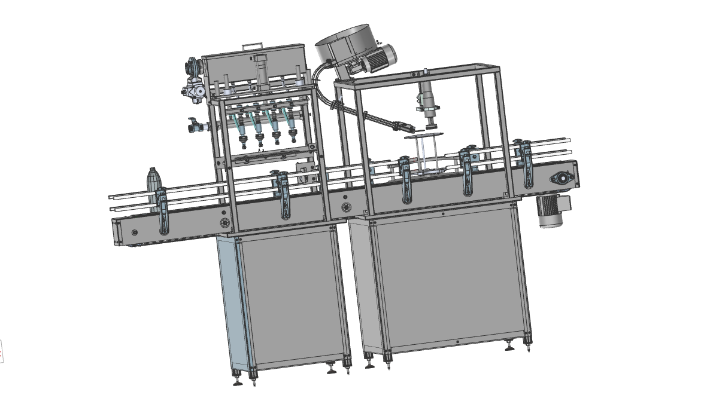
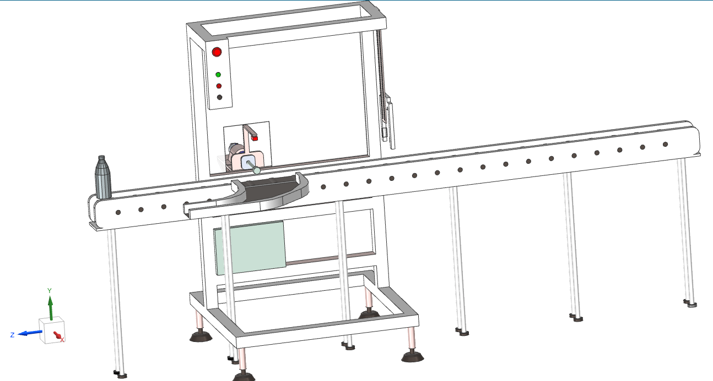
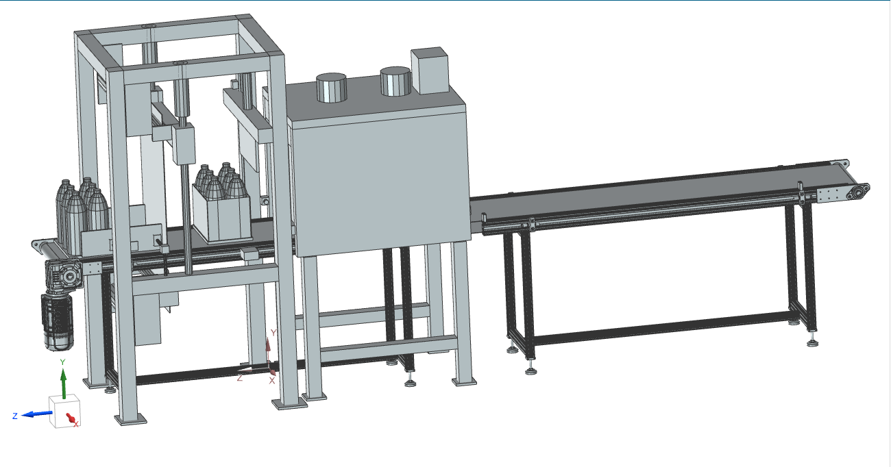
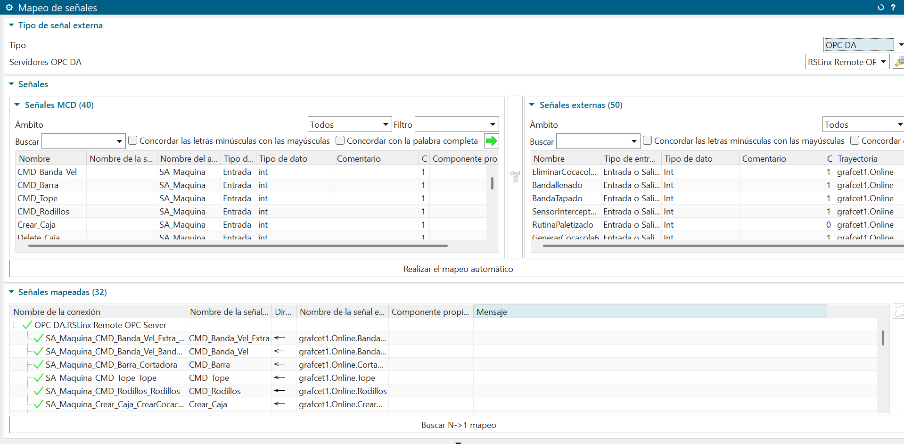

Módulo 05 de 07
Digital Factory
Representación digital en NX de las estaciones de rechazo, llenado y tapado, y la propuesta de Shrink Wrapper.
Gemelo digital
La línea, modelada en NX
Construimos la representación digital de tres estaciones de la línea en Siemens NX: la estación de rechazo de botellas, la estación de llenado y tapado, y nuestra propuesta de automatización para la estación de Shrink Wrapper (empaque termoencogido).



Integración
Mapeo de señales
Las señales del gemelo digital se mapean contra el controlador para operar el modelo en lazo cerrado con la lógica real.

Archivos del módulo
Modelos NX y flujo de integración
Los archivos NX del gemelo digital pesan alrededor de 500 MB, más de lo que admite el repositorio de GitHub, por lo que se alojan en Google Drive.
Evidencia audiovisual